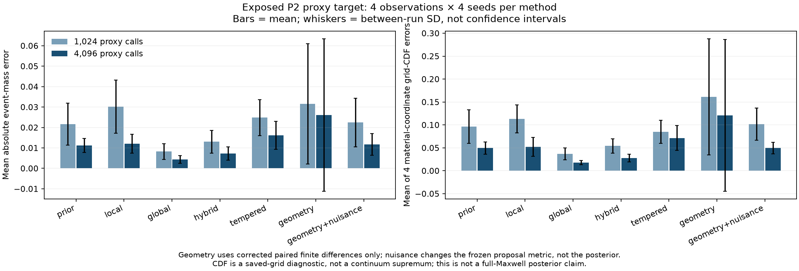
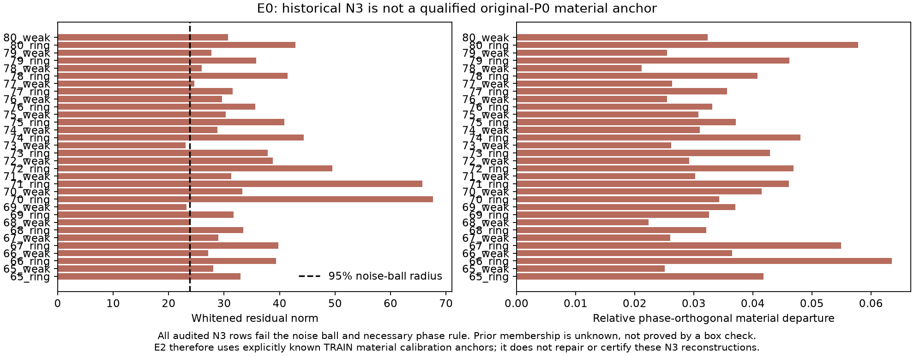
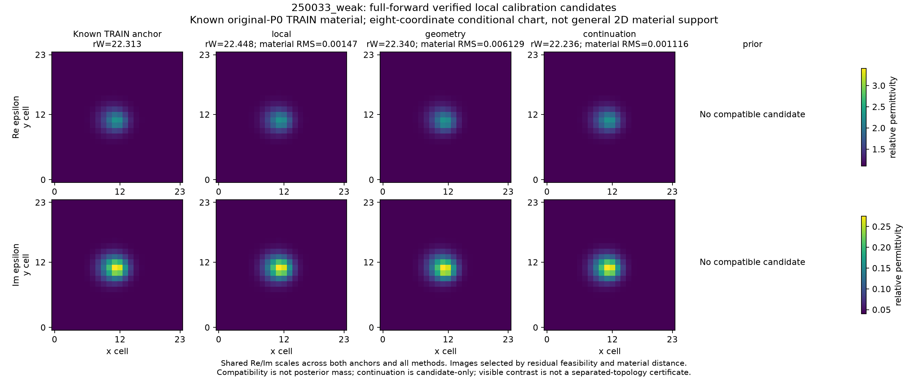
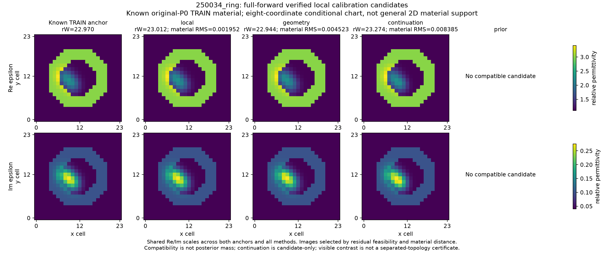
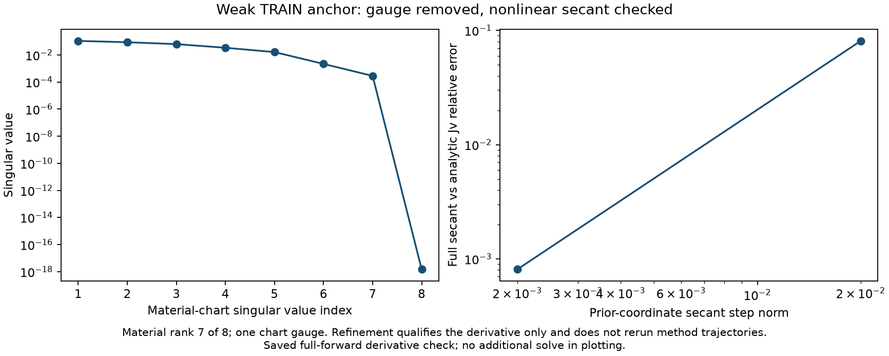
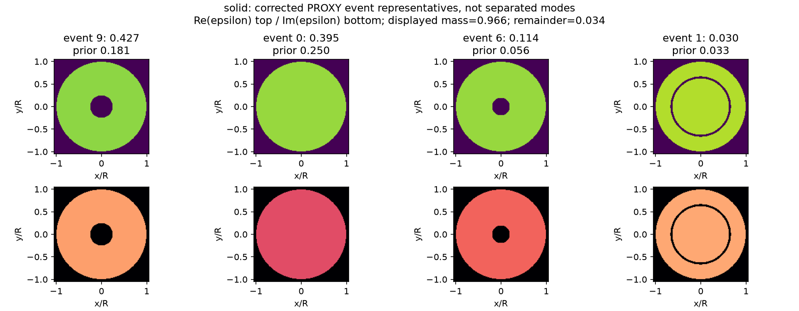
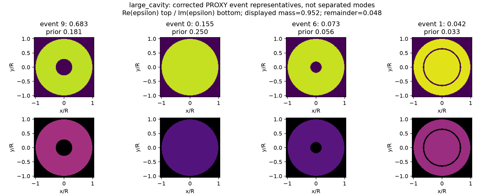
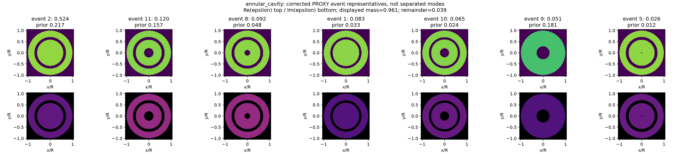
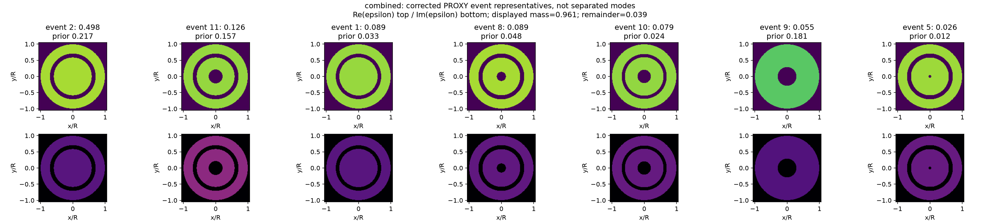

本页只读取已支付数组；绘图新增物理调用、训练和后验采样均为 0。二维材料图为已知公开 TRAIN anchor 周围的局部校准，不是重建 N3，也不赋予候选后验概率。
旧几何差分行已排除。四个已暴露观测、四个种子；代理后验的比较不等于全 Maxwell 校准。

残差可行和材料先验支持是两项不同要求；此处没有把后续已知 TRAIN 材料校准描述为 N3 重建。

只按在线残差兼容及与 anchor 的材料距离选代表；未按真值误差择优。候选概率未估计。

与上一张图共用实部和损耗色标。结构差异仍需独立资格判断，不能用低残差替代后验事件质量。

去除 chart gauge 后检查局部材料方向；细化检查没有追溯替换原方法轨迹。

有事件质量不等于分离mode，未展示质量保留，fullMie未新增验证。机器可读概率与样本

有事件质量不等于分离mode，未展示质量保留，fullMie未新增验证。机器可读概率与样本

有事件质量不等于分离mode，未展示质量保留，fullMie未新增验证。机器可读概率与样本

有事件质量不等于分离mode，未展示质量保留，fullMie未新增验证。机器可读概率与样本
